Orașul Botoșani a oferit lumii multe nume faimoase pentru ce au făcut culturii și istoriei locale, dar și naționale. Cele mai cunoscute dintre aceste nume sunt:
- Grigore Antipa(naturalist),
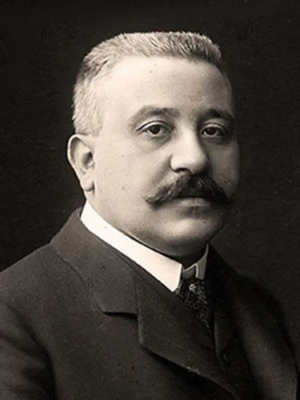
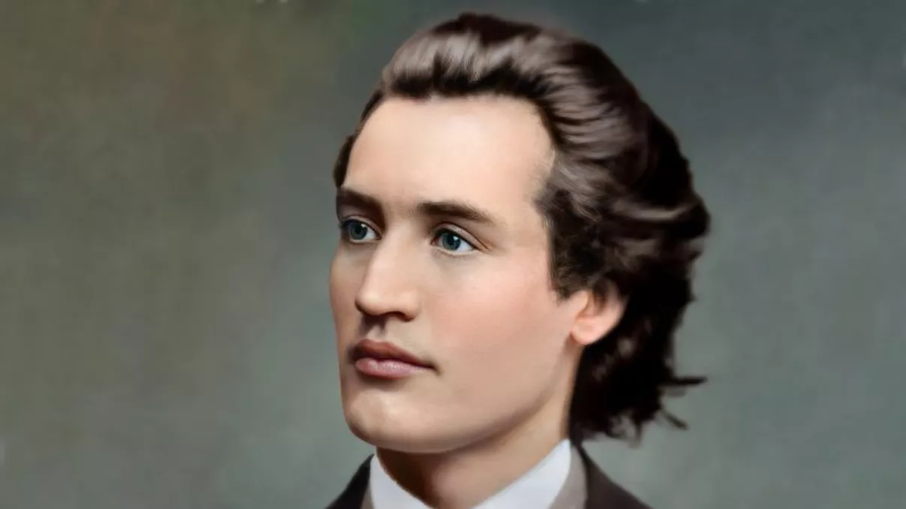
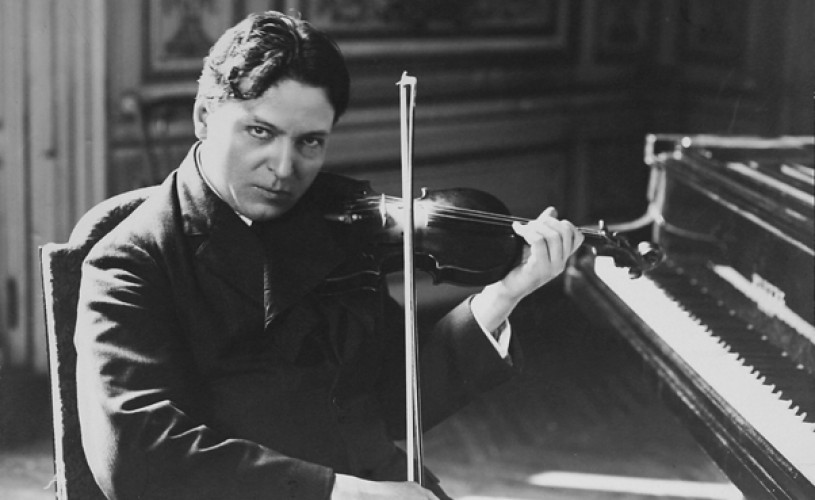
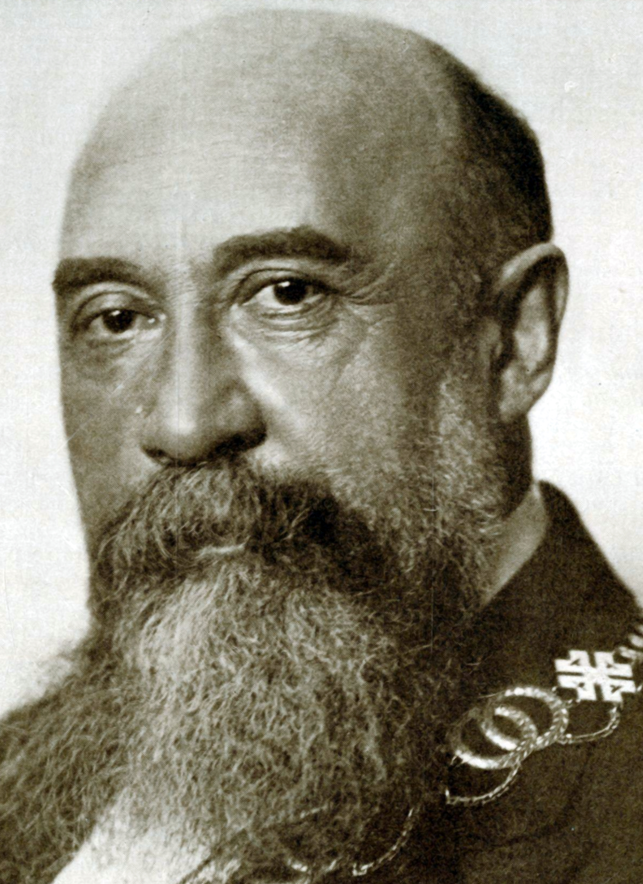
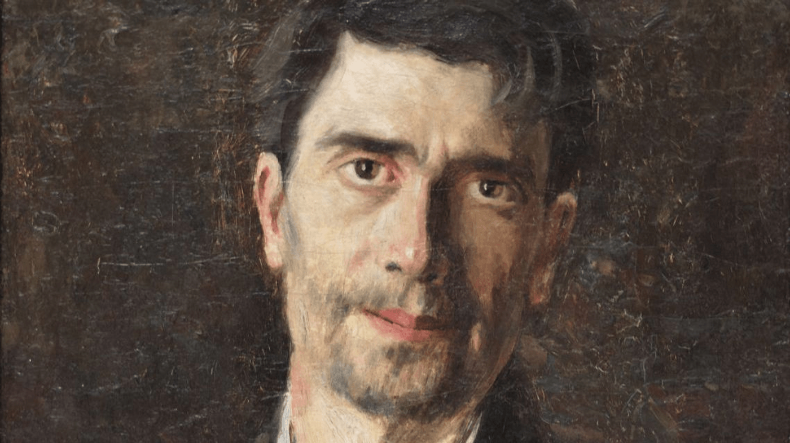
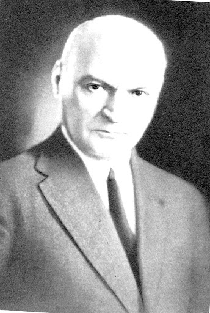
Vom vorbi mai pe larg despre Mihai Eminescu, fiind probabil, cea mai cunoscuta figura din Botosani. Mihai Eminescu, născut ca Mihai Eminovici, a fost un poet, prozator si jurnalist român, considerat în general ca fiind cea mai influentă personalitate din literatura româna. A publicat un singur volum de poezii, numit ”Poesii”, in care apar toate poeziile scrise de el de-a lungul vieții pentru revista Convorbiri Literare din care acesta făcea parte. Printre operele notabile se afla Luceafarul și Scrisorile I-V.
În Botoșani, se află multe clădiri minunate care v-ar merita timpul dacă le-ați vizita. Cele mai cunoscute sunt:
Casa Memorială "Mihai Eminescu".
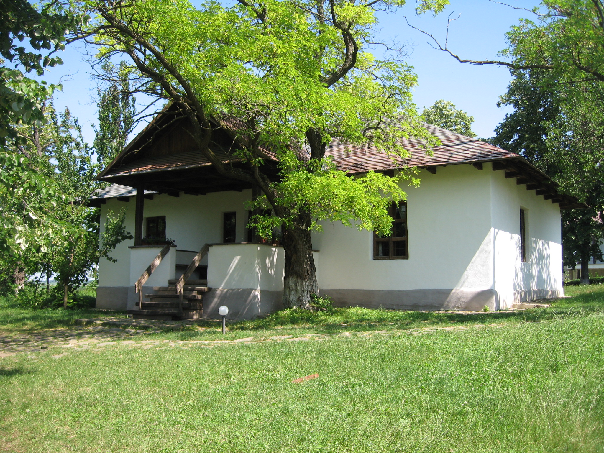
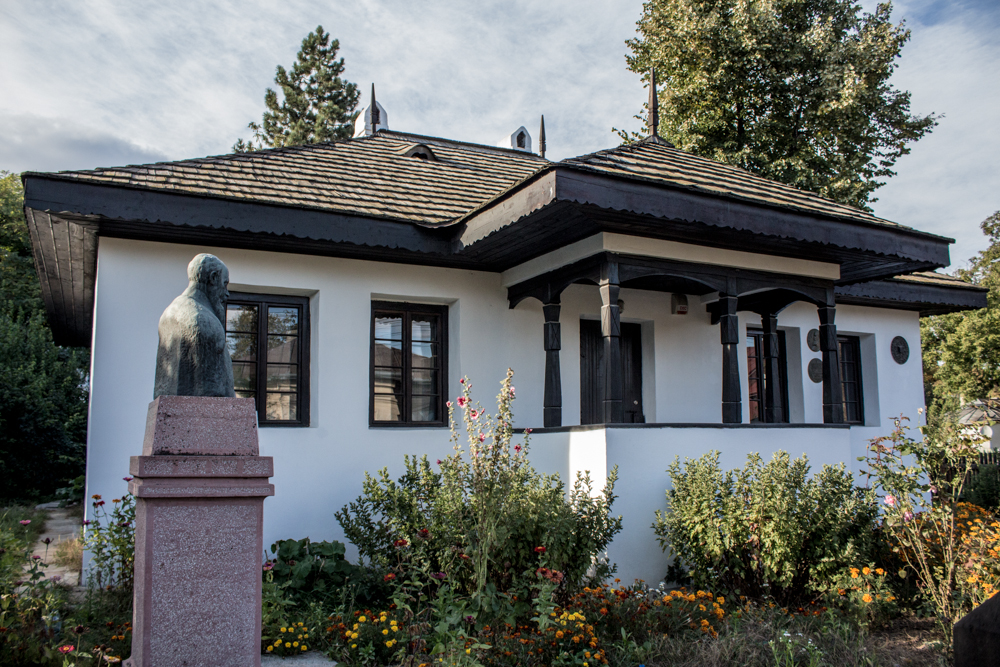
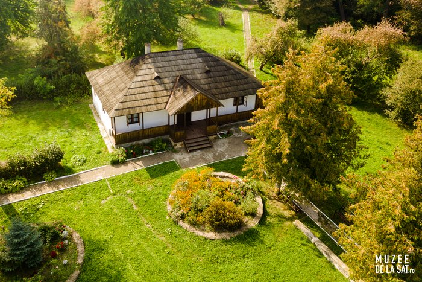
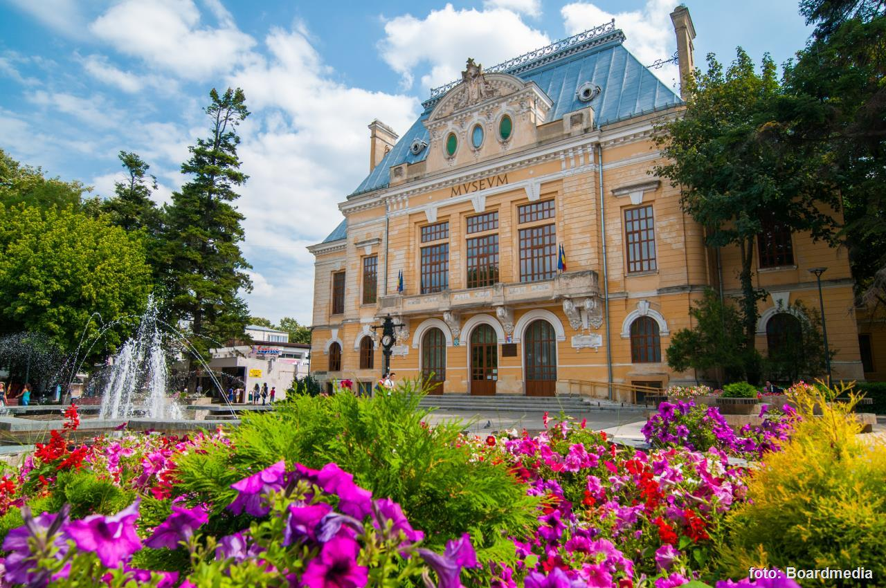
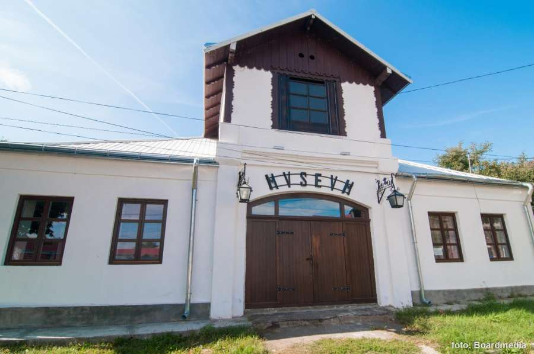
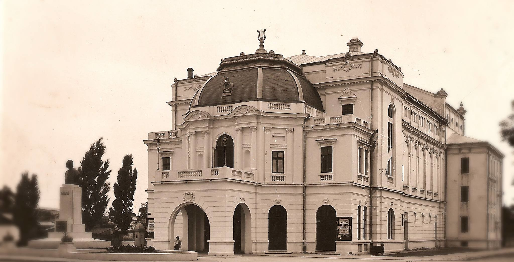
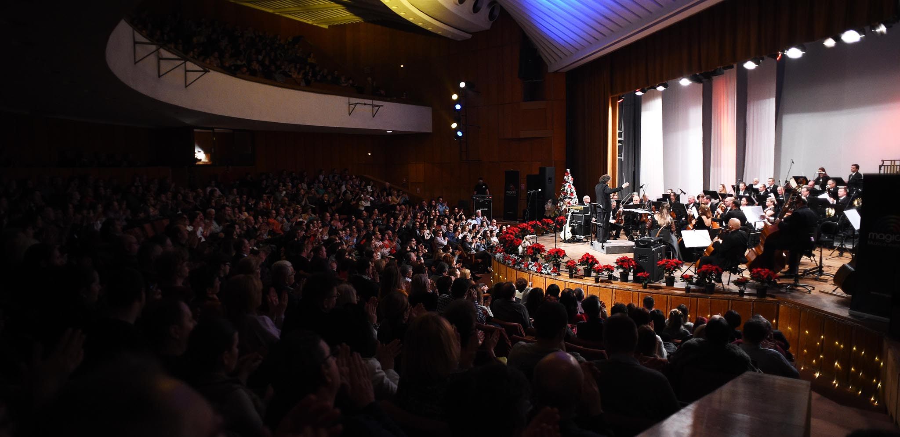
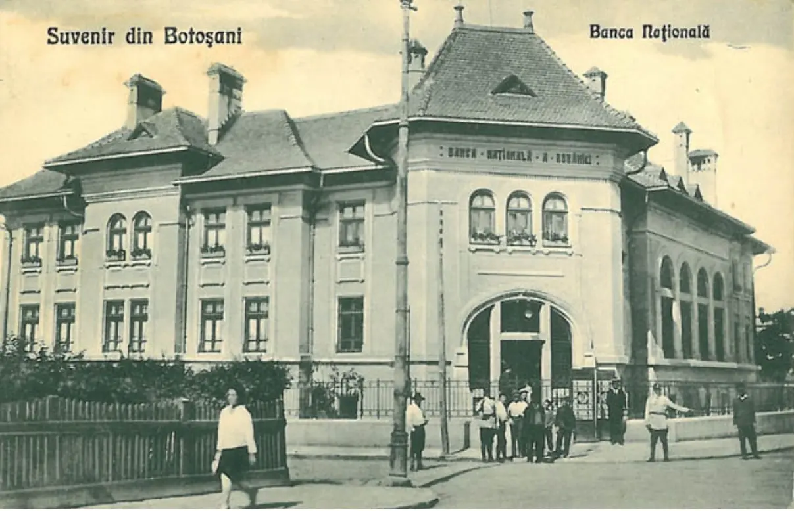
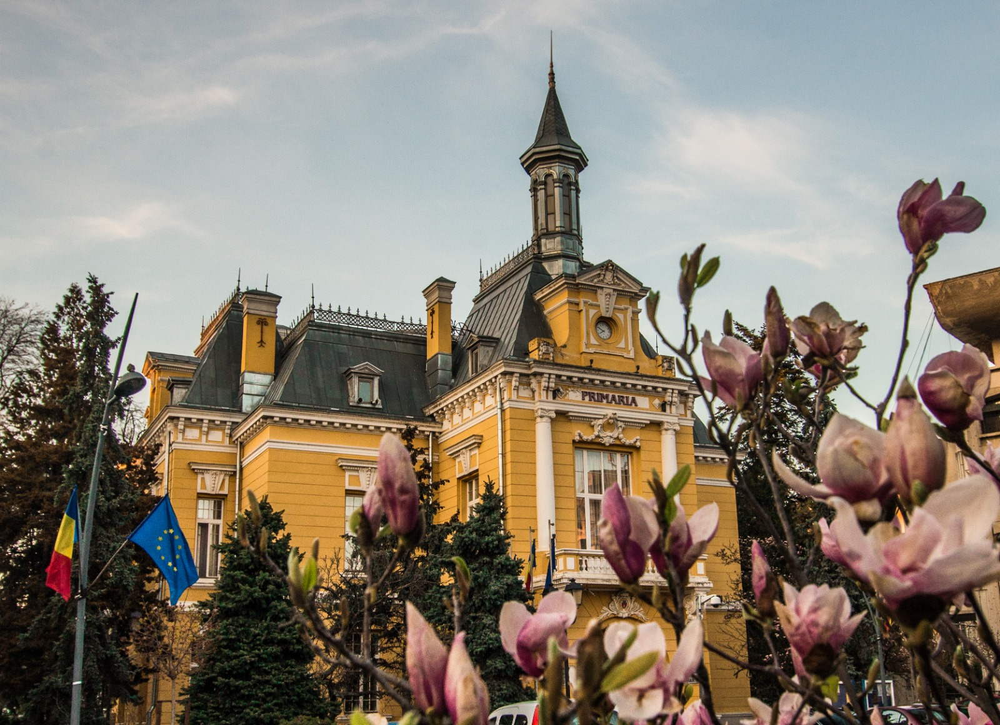